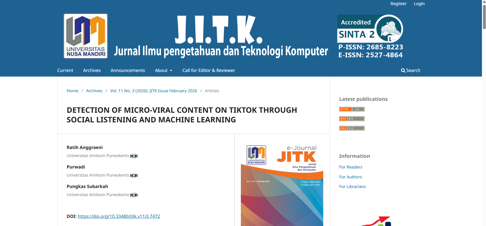
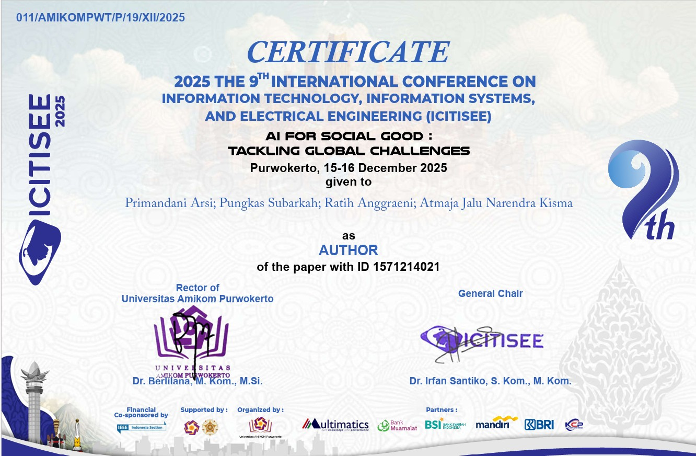
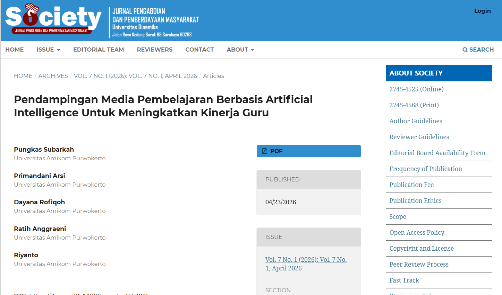
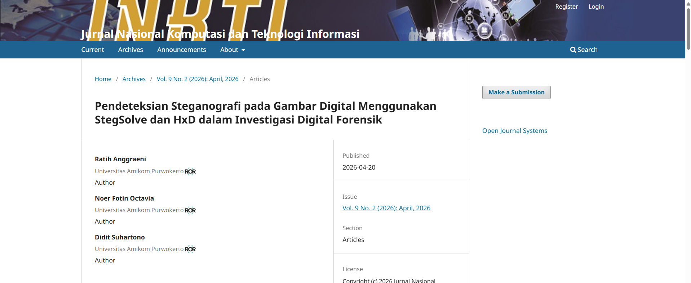

RESEARCH & ACADEMIC CONTRIBUTIONS
Publications
A collection of academic publications and research contributions
that reflect my journey in exploring Informatics, technology,
and data-driven innovation.

JITK (Jurnal Ilmu Pengetahuan dan Teknologi Komputer)
Detection and Prediction of Micro-Virality in TikTok Content
This research analyzes TikTok content using Social Listening
and Machine Learning to detect and predict micro-virality.
Several machine learning algorithms were evaluated to identify
patterns associated with viral content.
View Journal

IEEE Xplore
Multilingual Sentiment Analysis Model Based on Bidirectional LSTM on Bali Island Tourist Reviews
In this research, we explore how machine learning can better understand tourist opinions from multiple languages.
By using a Bidirectional LSTM approach, the model is able to capture deeper context in reviews—resulting in higher accuracy compared to traditional methods.
View Journal

Journal Pengabdian dan Pemberdayaan Masyarakat
Pendampingan Media Pembelajaran Berbasis Artificial Intelligence Untuk Meningkatkan Kinerja Guru
This community service program focused on improving the performance of teachers at SMA Negeri 1 Banyumas through artificial intelligence training.
The program involved preparation, implementation, and evaluation stages, with 31 teachers participating.
The results showed a significant improvement in participants’ knowledge and skills, achieving a post-test score of 91% in AI-based learning media.
View Journal

Jurnal Nasional Komputasi dan Teknologi Informasi
Pendeteksian Steganografi pada Gambar Digital Menggunakan StegSolve dan HxD dalam Investigasi Digital Forensik
This study investigates the detection of steganography in digital images through a combination of StegSolve and HxD analysis. Using bit-plane visualization and binary structure examination,
the research identifies abnormal patterns and additional data that may indicate hidden payloads in modified JPEG files.
The findings demonstrate that combining both tools can provide an effective preliminary approach for steganalysis and support digital forensic investigations of manipulated image files.
View Journal